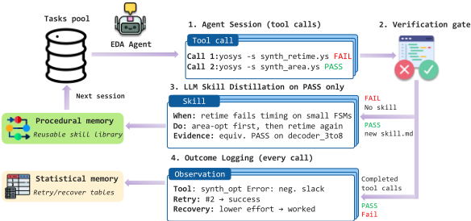
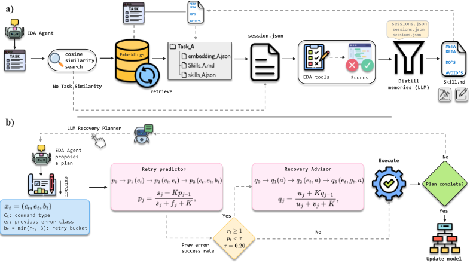
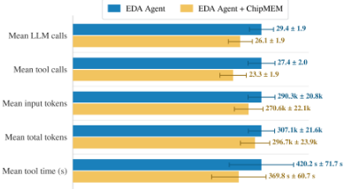
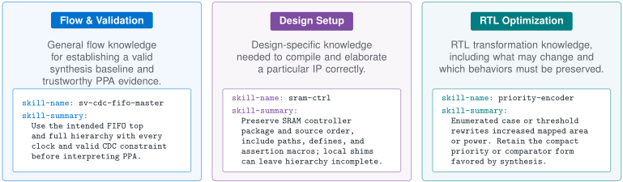
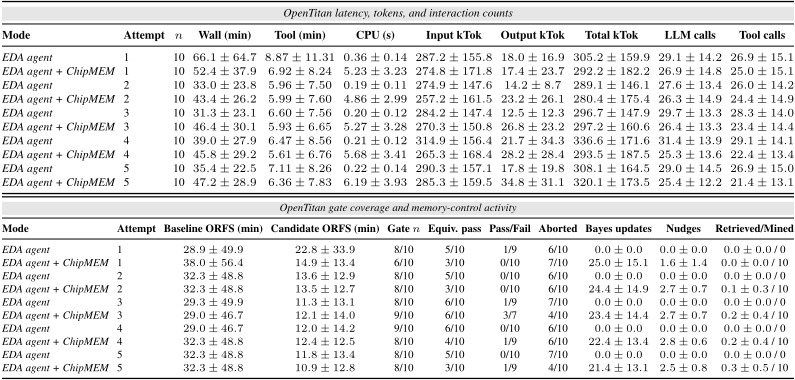
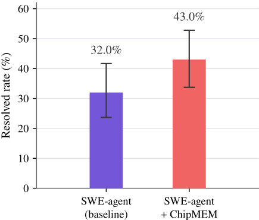
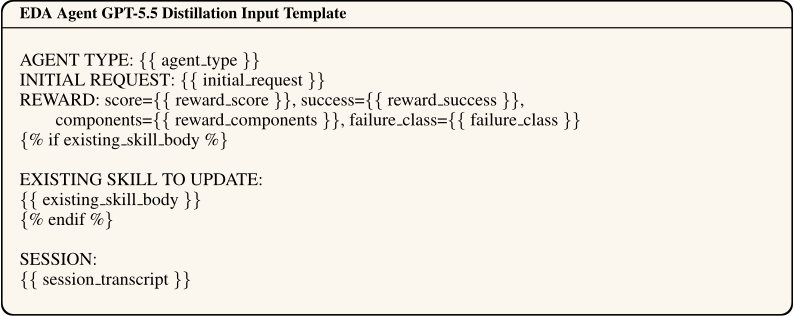
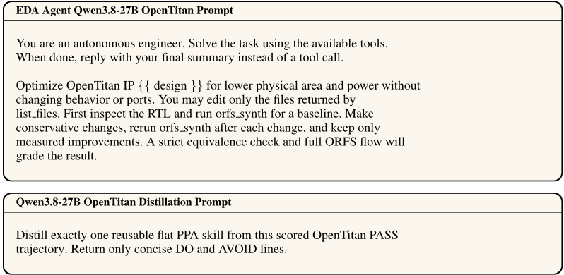

ChipMEM: Verification-Grounded Memory for EDA Agents
ChipMEM：面向 EDA Agent 的验证锚定记忆层
简介
LLM Agent 在 EDA 流程中生成与修订 RTL 设计时，已有方法从执行轨迹蒸馏技能或用工具奖励训练，但通常只在产生经验的任务上评测，无法确认记忆能否跨任务迁移。ChipMEM 提出与具体 Agent 解耦的验证锚定记忆层：程序性记忆只在综合、仿真或形式化验证 PASS 后才由 LLM 蒸馏并存储技能，用任务 embedding 余弦相似度检索；统计记忆用分层 Beta 后验建模工具调用成功与失败恢复概率，重试成功率低于 0.20 时触发 LLM 恢复规划器。结果显示 RTLRewriter-Bench 等价通过从 35/54 升至 39/54，held-out CVDP 冻结记忆库取得 20/20 对 18/20，OpenTitan 严格门限通过从 1/10 升至 4/10，且 LLM 调用、工具调用与工具耗时分别下降 11.2%、15.0%、12.0%。对团队而言，“验证通过才写入记忆”与 frozen/evolving 迁移评测范式可直接迁移到代码与测试类 Agent 的记忆系统设计。
问题
现有 EDA Agent 自我改进方法（从执行轨迹蒸馏可复用技能、用 EDA 工具奖励训练）通常在产生经验的任务或任务族上评测，无法回答存储的技能是否迁移到未见设计；对不相似任务的记忆直接暴露甚至可能有害。此外 Agent 常重复失败的工具调用而不复用历史上成功的恢复策略（EDA 工具延迟高，重复失败造成显著时间与 token 浪费），且依赖模型自评来决定技能入库不可靠。
方法
ChipMEM 是 Agent 无关的记忆层，不改动底层 Agent、工具与领域验收门，包含三部分：(1) 程序性记忆——以任务 embedding（对 RTL 文件或 CVDP 的 PROMPT.md 等预定义任务工件做 embedding）为 key 的技能库，用余弦相似度加阈值（0.6）检索 top-2 技能；技能只在确定性领域评测 harness（非 LLM judge）给出 verified PASS 后才由 LLM 蒸馏入库，支持 evolving（持续写入）与 frozen（只读）两种模式；(2) 统计记忆——分层 Beta 后验的 retry predictor（以工具命令、错误类别、重试次数为条件，K=8）与 recovery predictor（对恢复策略排序），重试成功率低于 τ=0.20 时激活 LLM 恢复规划器给出有界建议，每次工具调用原子化持久化证据；(3) 通用 adapter 记录任务表示、检索上下文、执行轨迹、产物与领域验收标准，使同一记忆接口同时服务 RTL 优化与 testbench 生成两类 Agent。
关键结果
RTLRewriter-Bench：等价通过输出 39/54 对比无记忆 35/54；49 设计短套件平均面积改进 8.69% 对 5.66%（正文另报 5.95%→8.88%），cell/wire 几何均值缩减从 5.9%/6.0% 提升至 8.3%/8.0%
RTL-OPT：平均面积改进从 6.18% 提升至 8.79%
Held-out CVDP（冻结只读记忆库，每设置单次评测）：总体 20/20 对 18/20，其中 CID013 从 8/10 升至 10/10，CID012 两种设置均保持 10/10
OpenTitan：full-PPA 严格门限通过从 1/10 升至 4/10（等价性两模式均 6/10）；平均面积/功耗改进从 0.05%/0.00% 升至 0.24%/2.54%，timing 保持稳定
OpenTitan 交互成本（50 会话）：平均 LLM 调用 29.4→26.1（-11.2%）、工具调用 27.4→23.3（-15.0%）、工具时间 420.2→369.8 秒（-12.0%）、输入 token -6.8%、总 token -3.4%
Custom Design Set：平均面积/功耗改进从 0.14%/0.39% 升至 0.31%/0.52%
5 设计 RTL-OPT 记忆消融：严格通过数 Memory OFF 为 3、procedural-only 为 4、Bayesian-only 为 4、组合状态为 5，且组合状态每接受设计 token 成本最低
创新点
区别于 Voyager、Reflexion、ReasoningBank、SkillOpt 等技能/记忆工作，ChipMEM 的技能入库以确定性领域验证 harness 的 PASS 为门槛而非模型自评，并显式用 frozen 模式在未见任务上评测记忆的迁移价值，而非在产生记忆的任务上自评；区别于把 EDA 反馈折入模型权重的 RL 或搜索式方法，它把验证过的结果转为跨任务、跨 Agent 复用的非参数记忆；统计记忆在工具步粒度上用分层 Beta 模型做重试/恢复决策，与轨迹级技能蒸馏互补；通用 adapter 使同一记忆接口跨 RTL 优化与 testbench 生成两个 EDA 域复用。
团队参考意义
相关度级别：high
命中能力域：3.1 上下文工程与记忆 | 3.3 Agent 架构与工具使用 | 3.5 评测与可靠使用
理由：直接命中 3.1 的 Agent 记忆系统与结构化上下文组织（程序性+统计双记忆、任务 embedding 检索、记忆作为上下文注入）、3.3 的技能系统与单 Agent 执行可靠性（技能库、工具调用重试/恢复预测、agent adapter 与验收 harness 设计）、3.5 的评测方法与成本效率（frozen/evolving 迁移评测范式、token/调用/耗时成本审计）。虽然论文应用域是 EDA/芯片设计而非团队的通用工程自动化，但其核心机制与团队“把模型用好”的关注点完全同构，且附录 SWE-bench Pro 试点表明方法可扩展到软件工程 Agent，对团队构建代码生成、测试辅助类 Agent 的记忆与技能体系有直接参考价值。
建议动作：深入精读并做内部分享
中文全文
arXiv:2609.27067v1 [cs.LG] 2026年9月22日
Abstract
基于大语言模型（LLM）的 Agent 使用电子设计自动化（EDA）工具，在综合与验证反馈下生成并修改寄存器传输级（RTL）设计。近期方法通过从执行轨迹中蒸馏可复用技能，或基于从 EDA 工具导出的奖励进行训练，从这些反馈中学习。这两种方法通常都在产生这些经验的任务上进行评估。在同一任务上反复获取基准测试（benchmark）反馈，可能会奖励针对特定任务的修改，而非形成可迁移的可复用知识。我们提出 ChipMEM，一个面向 EDA Agent、以验证为依据的记忆层。它将跨任务程序性记忆与轨迹内统计引导相结合。其程序性组件仅在技能通过综合、仿真或形式化检查后才对其进行蒸馏与存储，而不依赖模型自我评估。贝叶斯组件对工具调用结果维护分层 Beta 估计，并对在可比错误下曾成功的恢复策略进行排序。一个通用适配器将相同的记忆接口应用于 RTL 优化与测试平台生成 Agent，同时保留各领域各自的工具与验收标准。我们在训练任务上测量性能，并评估所学技能能否迁移到未见过的任务。在 RTLRewriter-Bench 上，在模型与工具设置匹配的条件下，ChipMEM 在 39/54 个计分设计上产生通过等价性检查的输出，而无记忆时为 35/54；在包含 49 个设计的短套件上，平均面积改进为 8.69%，而无记忆时为 5.66%。在留出的 CVDP 任务上，在每种设置仅进行一次评估的条件下，采用冻结程序性库的 ChipMEM 取得 20/20 个被接受的结果，而无记忆时为 18/20。

∗ 通讯作者：alrabah2@illinois.edu
蒸馏为技能（LLM）
预印本。
1 INTRODUCTION
大语言模型（LLM）如今已能支持芯片设计与验证的多个阶段。它们可以生成寄存器传输级（RTL）代码、修改硬件描述，并利用设计工具的反馈来修正自身的输出 [Liu et al., 2023, Lu et al., 2024, Pinckney et al., 2025, Yu et al., 2026]。近期的系统还为 Agent 配备了从先前的工具引导会话中蒸馏而来的可复用技能 [Du and Pinckney, 2026, Fang et al., 2026]。这种方法减少了将每一条经验都编码进提示的需要。于是，持续学习取决于 Agent 能否从经过验证的工作中发现可靠的技能，并在后续任务中复用它们。这一问题在芯片开发中尤为重要，因为早期的 RTL 决策会塑造后续的设计质量。有关位宽、资源共享和状态编码的选择会影响功耗、性能和面积，然而许多有用的改动需要工程师重构 RTL 源码，而不是仅依赖综合 [Lu et al., 2026, Yao et al., 2024]。修改后的 RTL 必须先通过仿真和等价性检查，才能继续向前推进。这些迭代十分缓慢，而且所吸取的经验往往只留在个别工程师手中，而未能成为可复用的知识。因此，自动化必不可少。
这些挑战推动了面向硬件设计的大语言模型研究的快速增长。此类模型能够对硬件描述进行推理，在数秒内提出候选改写方案，并在电子设计自动化（EDA）工具的反馈下对其进行迭代完善。现有工作既探索了参数化方法——通过监督微调或强化学习来调整模型权重 [Chen et al., 2026, Shi et al., 2025, Zhou et al., 2026]——也探索了非参数化方法，即为冻结模型配备经过整理的技能、搜索策略或工具在环反馈 [Arnold et al., 2026, Ping et al., 2026]。
先前的工作表明，Agent 可以通过保留来自早期轨迹的技能、反思和策略来实现自我改进 [Wang et al., 2023, Shinn et al., 2023, Ouyang et al., 2026]。近期的 EDA 系统已开始纳入类似形式的以工具为依据的经验。然而，这些方法通常是在产生记忆的同一任务或同一任务族上进行评估的，因而存储的技能在不同任务和未见过的设计上是否仍然适用，这一问题尚未得到解答。这类记忆在 Agent 再次面对相同任务时是有用的，但在全新的任务上，Agent 仍必须从头开始。此外，简单地让 Agent 接触从差异较大的任务中积累的记忆，效用有限，甚至可能适得其反；对某一设计而言最优的技能，可能会实际降低其在另一设计上的性能。这一空白促使我们构建一种记忆层，其内容由 EDA 工具认证，其价值则通过在产生这些记忆的任务之外的迁移来衡量。
To address this gap, we propose ChipMEM 2 , a verification-grounded memory layer for cross-task transfer that combines procedural memory and statistical memory. The procedural memory captures complete agent trajectories and distills them into reusable skills to be retrieved for subsequent tasks. These skills are collected and updated according to outcomes from verifiable evaluators for specific tasks, e.g. EDA tools for synthesis and verification. A successful strategy may create a new skill or refine an existing one, while a verified failure may be retained as guidance against repeating an ineffective action. Moreover, the skills are indexed by an embedding derived from the design RTL. Given a new task, similarities with respect to these embeddings are used to retrieve the skills most likely to be related to and beneficial for the current task; the central hypothesis being that similar designs will likely have transferable skills. The statistical memory complements these trajectory-derived lessons with a Bayesian model for continual learning through current and historical successes and failures, estimating the probability that a tool strategy will succeed in the current execution context and advising the agent when an unchanged retry is unlikely to be productive. Instead of solely relying on the agent's intrinsic reasoning to identify the right tools, we equip it with a 'data analyst' that produces advice grounded in statistics collected from prior rollouts. With statistical memory, the agent is thus able to begin a session with an informed prior over success likelihoods of tools, and can update this prior with each tool execution.
ChipMEM combines the procedural and statistical memories into a single memory layer through a common agent adapter that records the task representation, retrieved context, execution trajectory, returned artifacts, and domain-specific acceptance criterion, allowing both memory components to support EDA agents without requiring those agents to share the same tools or scoring procedure. This design allows procedural memory to evolve across a sequence of tasks or remain frozen for evaluation on unseen designs, while statistical memory summarizes execution outcomes and provides probabilistic guidance during tool use.
2 Code: https://github.com/aalrabah/ChipMEM.git

We summarize our primary contributions as follows:
We evaluate ChipMEM on the RTL-OPT [Lu et al., 2026] and RTLRewriter [Yao et al., 2024] benchmarks for PPA optimization, and on CVDP tasks for testbench generation [Pinckney et al., 2025]. The evaluation tests whether skills distilled from verified trajectories transfer to later tasks and unseen designs, and whether accumulated tool outcomes improve decisions during execution.
2 RELATED WORK
技能记忆与设计感知的检索。越来越多的工作为冻结的 Agent 配备程序性记忆，将过往回合的经验存储为可复用的工件，并检索这些经验以指导后续任务。Voyager [Wang et al., 2023] 从成功的回合中构建可执行的技能库，Reflexion [Shinn et al., 2023] 将执行反馈转化为语言化的情景记忆，ReasoningBank [Ouyang et al., 2025] 从成功与失败的轨迹中提炼可迁移的策略，SkillOpt [Yang et al., 2026] 则在不更新权重的情况下于冻结模型之上精炼技能文档。然而在芯片设计中，所存储策略的相关性取决于目标规格、RTL 结构、工具上下文和失效模式，因此对某一设计有帮助的技能在另一设计上可能无效甚至有害。这使得检索与技能提取同等重要，也促使我们在产生该记忆的任务上对记忆进行评估。ChipMEM 沿这一方向进一步扩展，将用于跨任务迁移、从轨迹中提炼的程序性记忆与用于会话内引导的贝叶斯统计记忆相结合，同时将二者都锚定在 EDA 工具产生的结果之上。
基于工具的 RTL 优化。RTL-OPT [Lu et al., 2026] 与 RTLRewriter [Yao et al., 2024] 在实现质量与功能等价性双重准则下评估由大语言模型（LLM）驱动的 RTL 优化。随后，近期方法以不同方式将 EDA 反馈融入优化过程。强化学习将带门控的工具链奖励注入模型权重 [Chen et al., 2026]。演化搜索与 Agentic 搜索在综合反馈下探索候选改写方案 [Ping et al., 2026, Arnold et al., 2026, Hsin et al., 2026]。冻结的 Agent 则从执行轨迹中演化出可复用技能 [Du and Pinckney, 2026, Fang et al., 2026, Wang et al., 2026]，而测试时训练将权重适配到单一设计，并在该设计一旦变更时将其丢弃 [Zhou et al., 2026]。这些方法改进的是 Agent 在优化过程中的搜索或适配方式，而 ChipMEM 则将经过验证的结果转化为可复用的程序性记忆与统计记忆，使其能够迁移到后续任务和不同的 EDA Agent。
用于 RTL 设计与评估的大语言模型。VerilogEval [Liu et al., 2023]、RTLLM [Lu et al., 2024] 与 CVDP [Pinckney et al., 2025] 为 RTL 生成、补全和验证提供了公认的基准测试（benchmark）。在这些工作的基础上，ChipMEM 将评估从孤立任务的成功进一步扩展，以考察经工具验证的经验在后续任务和未见过的设计上是否仍然有用，以及历史结果能否在工具引导的执行过程中改进决策。
3 ChipMEM
ChipMEM 是一个与具体 Agent 无关的层，它将经工具验证的执行轨迹转换为两种互补的记忆：程序性记忆（procedural memory）保存跨任务可复用的策略，而统计性记忆（statistical memory）则在会话内和跨会话学习动作级的成功与恢复模式。这两个组件在不改变底层 EDA Agent、工具或领域特定验收关卡的情况下增强 Agent 的上下文。图 2 总结了这一双记忆工作流程。
程序性记忆。我们将程序性记忆库表示为键值映射 M proc = { k i ↦→ ( v i , m i , h i ) } i M =1。对于给定任务，值元组 ( v i , m i , h i ) 由完整的技能文件 v i、描述其领域、任务和来源的元数据 m i，以及验证器结果 h i 组成。对于第 i 个任务，键 k i = ϕ ( z i ) ∈ R d 是将嵌入模型 ϕ 应用于预定义的任务工件 z i 所得到的任务嵌入。例如，在我们的实验中，z i 对应于 RTL 优化任务中的顶层 RTL 文件，以及 CVDP 任务中的任务定义文件 PROMPT.md。该任务定义不包含 Agent 指令、检索到的技能、工具历史、生成的文件、测试以及评分工件。
该记忆库初始为空，并随着对 N 个种子任务运行 R 轮而不断增长。对于第 n 个任务，我们检索程序性记忆，得到其键与当前任务嵌入 q n 具有最大相似度的值元组，即
其中，TopK[ sim ( · ); τ proc ] 是相对于相似度函数 sim 和阈值 τ proc 的 top-k 匹配列表；仅返回相似度高于 τ proc 的匹配项。我们使用嵌入上的余弦相似度作为相似度函数 sim ( q n , k j )。因此，R t 至多包含 K 个任务相似度最高且高于阈值 τ proc 的完整记忆项。
在第 n 个任务处理完成后，如果源任务尚无对应技能，ChipMEM 可以通过为该源任务添加技能来扩展程序性记忆库。只有当相应任务执行从可验证的领域特定评估框架（evaluation harness）获得经验证的 PASS，而非由 LLM 裁判（LLM judge）给出时，技能才会被添加到库中。我们可以以两种模式应用该程序性记忆库：演化（evolving）模式与冻结（frozen）模式。演化模式会将经验证的新增内容延续到后续任务，而冻结模式则使其初始库在整个过程中保持只读。
统计记忆（statistical memory）。虽然程序性记忆（procedural memory）使 EDA agent 能够提取高层策略来辅助其任务，但 agent 也能从更具结构化、范围更窄的工具失败恢复（tool-failure-recovery）技能中获益。EDA agent 经常重复失败的工具调用，而不复用在早期轨迹中已经成功的恢复方法。由于 EDA 工具可能具有特别高的延迟，重复的工具调用失败会导致显著的延迟和 token 消耗的浪费。因此，我们提出统计记忆，它基于从先前运行中收集的统计信息维护关于工具调用成功的先验信念，基于当前轨迹更新该先验，并通过在工具步骤粒度上的学习，就工具重试成功与失败恢复策略提供建议。统计记忆组件由两个二项分布模型组成——重试预测器（retry predictor）与恢复预测器（recovery predictor）——分别编码工具调用的成功可能性及其对应的失败恢复动作。如图 2 所示，重试预测器告知 agent 其提出的工具调用是否可能成功，而恢复预测器则提供从该失败中恢复的最成功策略。
在 agent 执行轨迹的第 t 轮，令 c t 为该 agent 提交的工具调用；进一步假设该工具此前在同一会话中已被调用 r t 次，且最后一次调用产生了错误 e t。如果 c t 的上一次调用成功，则 e t 被设为 None；否则被设为所遇到的具体错误类别。例如，在我们使用 PPA agent 进行的实验中，此类错误类别包括 syntax-error、unknown-module、liberty-missing、timing-fail 和 rc-nonzero。这为我们提供了关于工具成功可能性的统计信息。在工具调用出错之后，我们还会记录该 agent 所采取的动作 a t，以及 a t 是否带来了成功的恢复。对于每个错误类别 e t，我们由此收集一张由相关恢复动作及其对应成功可能性组成的表。
我们通过元组 x t = ( c t , e t , b t ) 来定义重试模型的上下文，其中 b t = min( r t , 3)。我们设置 b t = min( r t , 3)，使其取值为 0、1、2 和 3，其中 3 将三次或更多次更早的调用归为一组。这种饱和处理可防止稀疏的证据被拆分到许多较大的重试次数上。从全局 Beta (1 , 1) 后验 p 0 出发，该模型在三个层级中的每一层各增加一个条件变量。层级 p 1 以命令类型为条件，p 2 增加上一错误类别的 1 步历史，p 3 增加更早的历史：p 0 → p 1 ( c t ) → p 2 ( c t , e t ) → p 3 ( c t , e t , b t )，其中
其中 s j 和 f j 分别为第 j 层级上先前的成功调用与失败调用，参数 K 实质上控制了赋予先前历史的权重；K 的取值越低，模型就越短视。在我们的实验中，我们取 K = 8。最终估计值为 P retry (success | c t , e t , b t ) = p 3。在同类型调用失败后，若该值低于 τ stat = 0.20，便会激活恢复模型。
对于候选恢复策略 a 和当前工具阶段 g t，恢复层级为
例如，q 1 (inspect logs) 估计的是在所有错误和阶段中，inspect logs 这一操作成功从失败中恢复的频率。在每个层级，
其中 u j 和 v j 分别为历史上成功与失败的恢复次数，q j-1 是从更宽泛层级继承而来的概率，且 K = 8。因此 P recovery (a | e t , g t ) = q 3，候选策略的排序为
恢复模型被激活后，会将其排序后的策略传递给一个 LLM 恢复规划器，由后者向 Agent 返回一个有界的建议性计划。该排序仅具建议性质；每次完成的工具调用都会原子性地持久化重试与恢复证据，以供下一次决策使用，包括同一会话中的下一次决策。
算法。算法 1 概括了 ChipMEM 跨有序会话的运行流程。其中，D n 为任务工件，A 为 EDA Agent，T 为其工具集，V 为确定性的领域评估框架，q n 为任务嵌入，R n 为检索到的技能集合，H n 为执行轨迹，y n 为评估框架给出的最终判定。每次工具调用之后都会进行统计记忆更新。只有通过评估的轨迹才能向程序性记忆中添加技能。该算法展示的是演化模式。冻结模式则从固定的库开始，并跳过技能存储步骤。
Algorithm 1 procedural memory and statistical memory across sessions
输入：任务 { D n } N n =1、Agent A、EDA 工具 T、领域评估框架 V、嵌入器 ϕ
1: M proc ←∅；用 Beta(1 , 1) 先验初始化 M stat ▷ 程序性库；贝叶斯状态
2: for n = 1 , . . . , N do ▷ n：会话；N：总会话数
3: q n ← EMBEDTASK ( ϕ, D n ) ▷ q n：任务嵌入
4: R n ← RETRIEVESKILLS ( M proc , q n , τ proc ) ▷ R n：前 K 个技能载荷；τ proc：阈值
5: 将 ( D n , R n ) 提供给 A；初始化 H n ←∅ ▷ H n：执行轨迹
6: while 会话 n 处于活动状态 do
7: A 选择一个动作并调用 T 中的一个工具 ▷ Act
8: 将该动作及返回的结果追加到 H n
9: M stat ← BAYESUPDATE ( M stat , 最新工具结果 ) ▷ x t = ( e t , c t , b t )；重试模型
10: if 某一重复失败的 P retry < τ B then ▷ 重试概率；提醒阈值
11: 使用 π ( e t , g t ) 向 A 提供建议 ▷ 恢复模型；e t：错误；g t：阶段
12: end if
13: end while
14: y n ← RUNDOMAINHARNESS ( V , D n , H n ) ▷ y n：评估框架的最终判定
15: if y n = PASS then
16: v n ← DISTILLPROCEDURES ( H n ) ▷ 程序性蒸馏器；v n：技能
17: M proc ← STORESKILL ( M proc , q n , v n ) ▷ q n：索引；v n：技能
18: else
19: 保持 M proc 不变
20: end if
21: end for
Agent 适配器与验证。ChipMEM 通过一个通用适配器连接到每个 EDA 领域。对于任务 D n，适配器向 A 提供原始任务、检索到的技能 R n，以及任何贝叶斯恢复建议。它暴露领域工具，将每次工具动作及其结果记录到 H n 中，并把最终工件返回给 V。这里的 V 是确定性的领域评估框架，而非 LLM 裁判。PPA 验收要求综合成功、功能等价，以及经审计的正向改进。CVDP 测试平台生成要求隐藏的仿真、覆盖率和变异检查全部通过。在演化模式下，经验证的 PASS 可能会添加一项程序性技能。冻结模式则使程序性记忆保持不变。FAIL 或 INVALID 判定不会创建任何技能，而统计记忆仍会记录已完成的工具结果。
4 Experimental Setup
任务 CVDP 研究使用 40 个测试平台任务，其中 20 个训练任务和 20 个留出任务在 CID012 激励生成与 CID013 检查器生成之间平均分配 [Pinckney et al., 2025]。RTL-OPT 包含 38 个设计级 RTL 优化任务 [Lu et al., 2026]，而 RTLRewriterBench 包含 59 个可用案例，其中 54 个为短案例、5 个为长案例 [Yao et al., 2024]。OpenTitan 在每种模式下对十个 IP 模块进行五次尝试的评估 [Meza et al., 2023]。此外，我们还在一个由 20 个开源设计组成的自定义集合上进行了评估（详见附录）。
实现细节。我们在 RTL-OPT、RTLRewriter-Bench、自定义设计 PPA 研究以及 CVDP CID012 和 CID013 上使用 GPT-5.5 [OpenAI, 2026]。我们在 OpenTitan 上使用 Qwen3.8-27B [Qwen Team, 2026]。程序性记忆检索在第一组中使用 text-embedding-3-large，对 OpenTitan 使用 Qwen/Qwen3-Embedding-0.6B。所有实验的推理强度均设置为 medium。OpenTitan 最多使用 40 个工具步骤、600 秒的模型超时和 7200 秒的会话时限。检索在相似度阈值 0.6 下最多返回两个技能。该开源模型及其嵌入模型运行在一块 NVIDIA A100 80GB GPU 上 [NVIDIA Corporation, 2020]。附录 A.5 报告了详细的资源测量结果。
评估指标。等价通过率和严格门禁通过率是衡量功能正确性与完整任务验收的二元度量。对于 PPA，面积、功耗和时序增益是在综合与等价性验证之后相对于原始设计进行测量的。失败、无效、未证明、未改变和无改进的输出增益记为零。RTLRewriter 还额外报告相对于基线的单元与连线几何平均比值，其中低于 1 的值表示缩减。对于 CID012 和 CID013，任务通过率是生成的测试平台中通过所有隐藏 Xcelium/IMC 测试的比例。对于有序通过，累积 Pass@k 是到第 k 次通过时已解决任务所占的比例，并以顺序曲线而非独立采样估计的形式报告。
![Figure 3: Audited PPA outcomes across the custom-design PPA suite, OpenTitan, RTL-OPT, and RTLRewriter-Bench. Vertical bar graphs compare baseline EDA-Agent with no memory (purple) against ChipMEM (red). Horizontal bars show the per-task direction of change under ChipMEM as improved, unchanged, or hurt. RTLRewriter means use 54 scored cases after excluding five zero-cell cases. For, RTL-OPT we select the best valid result per design across three result sets and reports the strongest demonstrated capability.](assets/a779/figures/fig_3.png)
一个 EDA Agent 在多轮交互中针对同一个设计开展工作。它读取并编辑文件、调用设计工具、检查失败情况，并在最终评估之前修订其输出。PPA Agent 可以调用综合、仿真、时序和等价性工具。仿真 Agent 可以编译并运行测试平台。CVDP 仿真集包含 20 个训练任务和 20 个未见任务。CID012 激励生成和 CID013 检查器生成各贡献 10 个训练任务和 10 个未见任务。未见任务与训练任务互不相交。Agent 可以看到任务文件和设计上下文，而隐藏测试和参考工件则保留在其工作区之外。
PPA 指标范围。PPA 研究采用两种评估范围。我们首先以 RTL-OPT 和 RTLRewriter-Bench 作为第一轮面积优化研究，使用 Yosys 进行综合与等价性检查，并使用 ABC 进行工艺映射 [Wolf and Glaser, 2013, Brayton and Mishchenko, 2010]。这一快速、可复现的循环使我们能够在转向更广泛的 Custom Design Set 和 OpenTitan 流程之前，验证 Agent 工作流、等价性门控和测量方法学均正确运行。第一轮运行测量映射后面积，RTLRewriter-Bench 还记录单元数量和连线数量。由于我们没有为这两个基准测试（benchmark）运行配套的经特征化下游功耗或时序流程，因此不报告未经测量的功耗或性能数值。后续的 Custom Design Set 和 OpenTitan 研究报告完整的 PPA 指标，包括面积、功耗和时序。图 3 将第一轮面积优化结果与完整 PPA 结果在各自的测量范围下一并呈现。
基线与消融。图 3 和附录表 2 对比了 EDA agent 3 与 EDA agent + ChipMEM。EDA agent 是同一个领域 Agent，但禁用了记忆。它不接收任何检索到的技能，不写入任何技能，也不接收贝叶斯引导。EDA agent + ChipMEM 在启用记忆的情况下使用相同的模型、任务、提示、工具和预算。在演化模式下，EDA agent + ChipMEM 在任务经验证通过后更新技能库。在冻结模式下，EDA agent + ChipMEM 在未见任务评估期间读取固定的技能库。这些设置提供了 Memory OFF 与完整 ChipMEM 之间的全系统对比。另外，在五个 RTL-OPT 设计上，我们在匹配设置下对比 Memory OFF、仅程序性和仅贝叶斯三种配置，而程序性加贝叶斯的加载状态回放则报告组合后的系统能力。
3 EDA Agent 是 Cadence ChipStack 2.0，一个被领先芯片设计公司积极用于生产环境的专有系统；所有 GPT-5.5 实验均在该 Agent 上运行。
| Memory component ablation and loaded state replay ( n = 5 ).Mode | Memory component ablation and loaded state replay ( n = 5 ).PASS | Memory component ablation and loaded state replay ( n = 5 ).Gain | Memory component ablation and loaded state replay ( n = 5 ).Tokens in/out | Memory component ablation and loaded state replay ( n = 5 ).Tokens /PASS | Memory component ablation and loaded state replay ( n = 5 ).Tool /LLM | Memory component ablation and loaded state replay ( n = 5 ).Time |
|---|---|---|---|---|---|---|
| Memory OFF | 3 | 8.41% | 1.82M/150k | 657k | 183/191 | 111.5m |
| Procedural only | 4 | 10.13% | 1.67M/96k | 442k | 173/184 | 66.7m |
| Bayesian only | 4 | 8.60% | 1.29M /84k | 344k | 135/147 | 67.7m |
| Procedural + Bayesian | 5 | 10.36% | 1.49M/ 72k | 312k | 119/133 | 49.2m |
| Memory component ablation and loaded state replay ( n = 5 ).Mode | Memory component ablation and loaded state replay ( n = 5 ).PASS | Memory component ablation and loaded state replay ( n = 5 ).Gain | Memory component ablation and loaded state replay ( n = 5 ).Tokens in/out | Memory component ablation and loaded state replay ( n = 5 ).Tokens /PASS | Memory component ablation and loaded state replay ( n = 5 ).Tool /LLM | Memory component ablation and loaded state replay ( n = 5 ).Time |
5 Results and Discussion
跨基准测试（benchmark）解读。图 3 显示，在这两个公开基准测试上，ChipMEM 将 RTL-OPT 上的平均面积改进从 6.18% 提升至 8.79%，将 RTLRewriter-Bench 上的平均面积改进从 5.95% 提升至 8.88%。它还将 RTLRewriter-Bench 的单元与连线缩减从 5.9%/6.0% 提升至 8.3%/8.0%。逐设计结果中包括 RTL-OPT 上的 12 个面积改进和 RTLRewriter-Bench 上的 10 个面积改进，表明这些增益扩展到了不同的公开 RTL 优化任务。在全 PPA 研究中，Custom Design Set 将平均面积与功耗改进从 0.14%/0.39% 提升至 0.31%/0.52%。OpenTitan 将平均面积与功耗改进从 0.05%/0.00% 提升至 0.24%/2.54%，而时序保持稳定。表 3 进一步显示，OpenTitan 的全 PPA 门限通过数从 1/10 上升到 4/10，且两种模式下的等价性均保持在 6/10。综合来看，这些结果表明 ChipMEM 同时改进了公开的面积优化基准测试和更广泛的全 PPA 设计流程。
OpenTitan 交互成本。图 4 显示，ChipMEM 在多项资源度量上的均值更低。平均 LLM 调用次数从 29.4 降至 26.1，平均工具调用次数从 27.4 降至 23.3，平均工具时间从 420.2 秒降至 369.8 秒，对应降幅分别为 11.2%、15.0% 和 12.0%。输入 token 减少 6.8%，总 token 减少 3.4%。在这 50 个会话中，ChipMEM 的平均 LLM 调用次数、工具调用次数、输入与总 token 数以及工具时间均更低。
记忆消融。我们在相同的 RTL-OPT 设计（n = 5）上评估四种记忆配置，其中模型、任务顺序、RTL 输入、工具、随机种子和执行限制均保持匹配。

表 1 报告了严格 PASS 数量、经审计的面积增益以及交互成本。程序性和贝叶斯各自产生四个严格 PASS，而 Memory OFF 为三个。组合状态产生了五个严格 PASS、最高的平均经审计增益，以及每个被接受设计最低的 token 数。它记录的是两种记忆在同一设计序列上积累先前经验之后，完整系统的能力。
留出（held-out）PPA 技能检索。图 5 展示了在程序性记忆不断演化的情况下，对 36 个留出设计进行单次（one-shot）PPA 评估期间所检索技能的代表性摘要。这 50 次技能-设计检索包括 25 次 RTL Optimization、21 次 Flow & Validation 和 4 次 Design Setup 检索，表明该 Agent 最常接收到的是具体的 RTL 经验教训以及用于获得可信综合结果的流程。Cohort A 产生了 38 次技能-设计检索，而 cohort B 为 12 次（附录 A.2.2）。除了规模更大之外，cohort A 还包含更多与技能库中所代表设计相似的 FIFO、仲裁器和外设控制器，而 cohort B 则包含更多异构的处理器、存储器和高速互连模块。

| Held-out transfer (frozen, read-only memory).Held-out task category | Held-out transfer (frozen, read-only memory).EDA agent | Held-out transfer (frozen, read-only memory).EDA agent + ChipMEM | Held-out transfer (frozen, read-only memory).Change |
|---|---|---|---|
| CID012 stimulus | 10/10 (100%) | 10/10 (100%) | 0 pp |
| CID013 checker | 8/10 (80%) | 10/10 (100%) | +20 pp |
| Overall | 18/20 (90%) | 20/20 (100%) | +10 pp |
| Held-out transfer (frozen, read-only memory).Held-out task category | Held-out transfer (frozen, read-only memory).EDA agent | Held-out transfer (frozen, read-only memory).EDA agent + ChipMEM | Held-out transfer (frozen, read-only memory).Change |
CVDP 留出集迁移。表 2 在未见任务上评估了冻结的记忆。CID012 在两种设置下均保持 10/10 的性能。CID013 从 8/10 提升到 10/10，并将总体结果从 18/20 提高到 20/20。由于该库是只读的，多出的两次通过反映了先前所学程序性记忆的迁移。该结果表明，存储的经验在保持完美激励生成的同时改进了检查器生成。
记忆学到了什么。留出集检索结果表明，ChipMEM 保存的是跨设计的 RTL 知识，而不仅仅是操作 EDA 工具的指令。这一区别很重要：完成综合流程只能证明结果可以被评估，而改进 PPA 则需要可迁移的设计推理。未来工作应通过成对的、技能级别的消融实验，分离出各个被检索技能对流程完成和 PPA 改进的贡献。
6 Limitations
ChipMEM 使用固定的 top two 检索设置，阈值为 0.6。组件与冻结迁移研究覆盖了五个 RTL-OPT 设计以及每类十个未见过的 CVDP 任务。未来工作应测试更广泛的检索设置、更多的 EDA 任务以及受控的运行时环境。
7 Conclusion
ChipMEM 将经过工具验证的 EDA 经验转化为可复用的程序性记忆与统计性记忆。它在不改变底层 agent 的情况下提升了被采纳的结果。在 OpenTitan 评估中，它平均使用了更少的 LLM 调用与工具调用、更少的输入 token 与总 token，以及更少的工具时间。附录 A.7 中的 SWE-bench Pro [Deng et al., 2025] 初步实验将评估扩展到了软件工程领域，并为在更多领域测试 ChipMEM 提供了动机。未来工作应测试更大的记忆规模以及更广泛的跨领域迁移。
Table of Contents
A.1
Per-Design PPA Results
. . . . . . . . . . . . . . . . . . . . . . . . . . . . . . . . . . . . . . . . . . . . . . . . . . . . . . . . . . .
A.2
Held-Out A and B: Per-Design PPA Results
A.3
OpenTitan Ten-Design PPA Audit
. . . . . . . . . . . . . . . . . . . . . . . . . . . . . . . . . . . . . . . . . . . . . . . . .
A.4
Memory ON vs OFF: Cost and Consistency
A.5
Execution and Resource Metrics
. . . . . . . . . . . . . . . . . . . . . . . . . . . . . . . . . . . . . . . . . . . . . . . . . .
A.6
Experiment Grid
. . . . . . . . . . . . . . . . . . . . . . . . . . . . . . . . . . . . . . . . . . . . . . . . . . . . . . . . . . . . . . . . .
A.7
SWE-bench Pro Pilot
. . . . . . . . . . . . . . . . . . . . . . . . . . . . . . . . . . . . . . . . . . . . . . . . . . . . . . . . . . . . .
A.8
Prompts
. . . . . . . . . . . . . . . . . . . . . . . . . . . . . . . . . . . . . . . . . . . . . . . . . . . . . . . . . . . . . . . . . . . . . . . . . .
| (a) RTL-OPT.Model | (a) RTL-OPT.Syntax | (a) RTL-OPT.Equiv. passed | (a) RTL-OPT.Area < Suboptimal RTL / equiv. passed | (a) RTL-OPT.Area < Golden RTL / equiv. passed | (a) RTL-OPT.Avg. area improvement (%) |
|---|---|---|---|---|---|
| GPT-4o RTL-OPT | 36/38 | 24/38 | 12/24 (50.0%) | 10/24 (41.7%) | 3.58% |
| GPT-4o-mini RTL-OPT | 35/38 | 24/38 | 7/24 (29.2%) | 6/24 (25.0%) | 1.69% |
| DeepSeek V3 RTL-OPT | 38/38 | 24/38 | 11/24 (45.8%) | 10/24 (41.7%) | 3.68% |
| DeepSeek R1 RTL-OPT | 37/38 | 23/38 | 13/23 (56.5%) | 9/23 (39.1%) | 4.80% |
| GPT-5.5 EDA agent | 37/38 | 33/38 | 14/33 (42.4%) | 10/33 (30.3%) | 6.18% |
| GPT-5.5 ∗ EDA agent + ChipMEM | 37/38 | 33/38 | 19/33 (57.6%) | 13/33 (39.4%) | 8.79% |
| (a) RTL-OPT.Model | (a) RTL-OPT.Syntax | (a) RTL-OPT.Equiv. passed | (a) RTL-OPT.Area < Suboptimal RTL / equiv. passed | (a) RTL-OPT.Area < Golden RTL / equiv. passed | (a) RTL-OPT.Avg. area improvement (%) |
(b) RTLRewriter-Bench
| Model | Suite | Equiv. passed | Area wins | Avg. area (%) ↑ | Cell/Wire ratio ( × baseline) |
|---|---|---|---|---|---|
| GPT-5.5 EDA agent | Short | 33/49 | 12/49 | 5.66% | 0.927/0.923 |
| GPT-5.5 EDA agent + ChipMEM | Short | 37/49 | 15/49 | 8.69% | 0.894/0.897 |
| GPT-5.5 EDA agent | Long | 2/5 | 1/5 | 6.85% | 0.903/0.892 |
| GPT-5.5 EDA agent + ChipMEM | Long | 2/5 | 1/5 | 7.47% | 0.872/0.858 |
| Model | Suite | Equiv. passed | Area wins | Avg. area (%) ↑ | Cell/Wire ratio ( × baseline) |
(c) custom-design PPA audit
| Model | Equiv. passed | Area wins | Avg. area (%) ↑ | Avg. power (%) ↑ | Median timing (%) |
|---|---|---|---|---|---|
| GPT-5.5 EDA agent | 8/20 | 3/20 | 0.1400% | 0.3879% | 0.0000% |
| GPT-5.5 EDA agent + ChipMEM | 10/20 | 4/20 | 0.3101% | 0.5211% | 0.0000% |
| Model | Equiv. passed | Area wins | Avg. area (%) ↑ | Avg. power (%) ↑ | Median timing (%) |
(d) OpenTitan ten-design PPA audit
| Model | Equiv. passed | Full PPA gate pass | Avg. area (%) ↑ | Avg. power (%) ↑ | WNS/TNS change (ns) |
|---|---|---|---|---|---|
| Qwen3.8-27B EDA agent | 6/10 | 1/10 | 0.0519% | 0.0000% | 0.0/0.0 |
| Qwen3.8-27B EDA agent + ChipMEM | 6/10 | 4/10 | 0.2431% | 2.5373% | 0.0/0.0 |
| Model | Equiv. passed | Full PPA gate pass | Avg. area (%) ↑ | Avg. power (%) ↑ | WNS/TNS change (ns) |
A Appendix
| Five-pass training aggregate.Training task category | Five-pass training aggregate.EDA agent | Five-pass training aggregate.EDA agent + ChipMEM | Five-pass training aggregate.Change |
|---|---|---|---|
| CID012 stimulus | 49/50 (98%) | 48/50 (96%) | - 2 pp |
| CID013 checker | 39/50 (78%) | 42/50 (84%) | +6 pp |
| Overall | 88/100 (88%) | 90/100 (90%) | +2 pp |
| Five-pass training aggregate.Training task category | Five-pass training aggregate.EDA agent | Five-pass training aggregate.EDA agent + ChipMEM | Five-pass training aggregate.Change |
A.1 Per-Design PPA Results
| Per-design five-attempt PPA evaluation ( n = 20 ).Design | Per-design five-attempt PPA evaluation ( n = 20 ).Model | Per-design five-attempt PPA evaluation ( n = 20 ).Pass@1 | Per-design five-attempt PPA evaluation ( n = 20 ).Pass@2 | Per-design five-attempt PPA evaluation ( n = 20 ).Pass@3 | Per-design five-attempt PPA evaluation ( n = 20 ).Pass@4 | Per-design five-attempt PPA evaluation ( n = 20 ).Pass@5 | Per-design five-attempt PPA evaluation ( n = 20 ).Area Gain | Per-design five-attempt PPA evaluation ( n = 20 ).Power Gain | Per-design five-attempt PPA evaluation ( n = 20 ).Timing Gain | Per-design five-attempt PPA evaluation ( n = 20 ).Synthesis | Per-design five-attempt PPA evaluation ( n = 20 ).Equiv. pass |
|---|---|---|---|---|---|---|---|---|---|---|---|
| 02 fifo sync | EDA agent EDA agent + ChipMEM | 0 0 | 0 0 | 1 0 | 1 0 | 1 0 | 0.0000% 0.0000% | 0.0000% 0.0000% | 0.0000% 0.0000% | 1/5 0/5 | FAIL FAIL |
| 03 rv32i alu | EDA agent EDA agent + ChipMEM | 1 1 | 1 1 | 1 1 | 1 1 | 1 1 | 0.0000% 0.0000% | 0.0000% 0.0000% | 0.0000% 0.0000% | 2/5 1/5 | FAIL FAIL |
| 09 apb gpio | EDA agent | 0 | 1 | 1 1 | 1 | 1 | 0.0567% 0.0000% | 0.3937% | 0.0000% | 1/5 | |
| EDA agent + ChipMEM | 0 | 1 | 1 | 1 | 0.3937% | 0.0000% | 4/5 | PASS PASS | |||
| 11 arbiter | EDA agent EDA agent + ChipMEM | 0 0 | 1 0 | 1 1 | 1 1 | 1 1 | 0.0000% 0.0000% | 1.4529% 0.0000% | 9.5161% 0.0000% | 2/5 3/5 | PASS FAIL |
| 14 axi adapter rd | EDA agent EDA agent + ChipMEM | 0 0 | 0 1 | 0 1 | 0 1 | 1 1 | 0.0000% 0.0000% | 0.0000% 0.0000% | 0.0000% 0.0000% | 1/5 2/5 | PASS PASS |
| 18 uart8receiver | EDA agent EDA agent + ChipMEM | 1 | 1 0 | 1 0 | 1 1 | 1 1 | 0.0000% 0.0000% | 0.0000% | 0.0000% 0.0000% | 2/5 | FAIL FAIL |
| 0 | 0.0000% | 2/5 | |||||||||
| ahb3lite apb bridge | EDA agent EDA agent + ChipMEM | 0 0 | 0 0 | 0 0 | 1 0 | 1 1 | 0.0000% 2.9366% | 0.0000% 4.4379% | 0.0000% 0.0000% | 2/5 1/5 | FAIL PASS |
| apb spi | EDA agent EDA agent + ChipMEM | 0 0 1 1 | 1 1 | 1 1 | 1 1 | 1 1 | 0.0000% 0.0000% | 0.0000% 0.0000% | 0.0000% 0.0000% | 2/5 2/5 | PASS FAIL |
| axi lite interface | EDA agent EDA agent + ChipMEM | 1 | 1 1 | 1 1 | 1 1 | 0.0000% 0.0000% | 0.0000% 0.0000% | 0.0000% 0.0084% | 2/5 3/5 | FAIL PASS | |
| bsg ready to credit flow | EDA agent EDA agent + ChipMEM | 0 0 0 | 1 0 0 | 1 0 | 1 | 1 0 | 5.4759% | 2.2307% 2.2307% | 2/5 0/5 | PASS PASS | |
| converter | 0 | 0 | 1 | 0 | 2.6174% 2.6174% | 5.4759% 0.0000% | 0.0000% | 3/5 | PASS | ||
| bsg serial in parallel out dynamic | EDA agent EDA agent + ChipMEM | 0 | 1 | 1 1 | 1 1 1 | 0.0000% 0.0027% 0.0000% | 0.0943% 0.0000% | 0.0000% 0.0000% | 3/5 4/5 | PASS | |
| cdc fifo master hier | EDA agent EDA agent + ChipMEM | 1 0 | 1 0 | 1 0 | 1 1 | 1 1 1 | 0.0000% 0.0000% 0.0000% | 0.0000% | 0.0000% 0.0000% | 2/5 | FAIL FAIL |
| gpio | EDA agent EDA agent + ChipMEM | 1 0 | 1 0 | 1 0 | 1 0 | 0.0000% 0.0000% | |||||
| EDA agent | 0 | 0 | 0 | 0.0000% | 0.0000% | 0.0000% 0.0000% | 1/5 1/5 0/5 | PASS FAIL | |||
| hmac i2c | EDA agent + ChipMEM EDA agent EDA agent + ChipMEM | 0 0 | 0 0 0 | 0 0 | 0 0 1 | 1 0 1 | 0.6454% 0.0000% 0.0000% | 0.0194% 0.0000% 0.0000% | 0.0000% 0.0000% | 1/5 0/5 | FAIL PASS |
| 0 | 0 | 0 0 | 1 | 0.0000% | 0.0000% | 0.0000% | 1/5 | FAIL FAIL | |||
| nand flash controller riscv fetch | EDA agent EDA agent + ChipMEM EDA agent | 0 0 0 1 | 1 0 0 | 1 0 | 1 0 1 | 0 1 1 | 0.0000% 0.0000% 0.0000% | 0.0000% 0.0000% 0.0000% | 0.0000% 0.0000% 0.0000% | 2/5 0/5 1/5 4/5 | FAIL PASS FAIL PASS |
| sdram axi | EDA agent + ChipMEM EDA agent EDA agent + ChipMEM | 0 1 | 1 0 | 0 1 | 1 1 | 1 1 | 0.1264% 0.0000% | 0.0000% 0.0000% | 1/5 3/5 | PASS PASS | |
| 1 | 0 1 | 1 | |||||||||
| 0.0000% | |||||||||||
| 0 | 0.4348% 0.0000% | FAIL | |||||||||
| 0 | 0 | 0 1 | 1 | 0.0000% 0.0000% | 0.0000% 0.0000% | 0.0000% 0.0000% | 0/5 3/5 | FAIL | |||
| sram ctrl | EDA agent EDA agent + ChipMEM | 0 1 | 0 1 | 1 | 1 0 | 1 0 | 0.0000% 0.0000% | 3/5 0/5 | FAIL FAIL | ||
| sv cdc fifo | EDA agent agent + ChipMEM | 0 | 1 0 | 1 0 | 0.0000% | 0.0000% | |||||
| EDA | 0.0000% | 0.0000% | |||||||||
| master |
| Per-design five-attempt PPA evaluation ( n = 20 ).Design | Per-design five-attempt PPA evaluation ( n = 20 ).Model | Per-design five-attempt PPA evaluation ( n = 20 ).Pass@1 | Per-design five-attempt PPA evaluation ( n = 20 ).Pass@2 | Per-design five-attempt PPA evaluation ( n = 20 ).Pass@3 | Per-design five-attempt PPA evaluation ( n = 20 ).Pass@4 | Per-design five-attempt PPA evaluation ( n = 20 ).Pass@5 | Per-design five-attempt PPA evaluation ( n = 20 ).Area Gain | Per-design five-attempt PPA evaluation ( n = 20 ).Power Gain | Per-design five-attempt PPA evaluation ( n = 20 ).Timing Gain | Per-design five-attempt PPA evaluation ( n = 20 ).Synthesis | Per-design five-attempt PPA evaluation ( n = 20 ).Equiv. pass |
| Model | Pass@1 | Pass@2 | Pass@3 | Pass@4 | Pass@5 |
|---|---|---|---|---|---|
| EDA agent | 30.0 ± 47.0% | 50.0 ± 51.3% | 65.0 ± 48.9% | 80.0 ± 41.0% | 85.0 ± 36.6% |
| EDA agent + ChipMEM | 20.0 ± 41.0% | 40.0 ± 50.3% | 50.0 ± 51.3% | 65.0 ± 48.9% | 80.0 ± 41.0% |
| Model | Pass@1 | Pass@2 | Pass@3 | Pass@4 | Pass@5 |
A.2 Held-Out PPA Cohorts
我们评估了两个互不相交的、此前未见过的 RTL 设计队列：队列 A 包含 20 个设计，队列 B 包含 16 个设计。每个设计按队列顺序各评估一次。评估从早期经工具评估的 PPA 会话中提炼出的程序性技能开始，同时库更新保持启用。因此，一个被复用的技能可能来自初始库，也可能来自有序留出评估中较早的一次运行。在下表中，Reused 表示使用现有技能上下文，而 Mined 表示从当前轨迹中创建技能。
A.2.1 Per-design outcomes
表 6 报告了每次留出评估的结果。逐设计视图区分了成功完成综合且具有可用 PPA 测量值的运行，与完成了综合但未产生足够指标以进行 PPA 比较的运行。
表 6：使用 GPT-5.5 对留出队列 A 和 B 进行单次 ChipMEM 评估的逐设计结果。综合得分表示完整（1.00）或部分（0.33）完成。PPA 条目为原始相对变化；长破折号表示不可用的指标。
| Held-out A ( n = 20 ).Design | Held-out A ( n = 20 ).Memory action | Held-out A ( n = 20 ).Memory action | Held-out A ( n = 20 ).Synthesis | Held-out A ( n = 20 ).Power | Held-out A ( n = 20 ).Area | Held-out A ( n = 20 ).Timing/WNS | Held-out A ( n = 20 ).PPA available |
|---|---|---|---|---|---|---|---|
| sync fifo | Reused | Reused | 0.33 | -10.1% better | -7.2% better | +13.3% better | Yes |
| multibit fifo sync | Reused | Reused | 0.33 | - | - | - | No |
| credit fifo | Reused | Reused | 1.00 | +0.1% same | +0.1% same | -6.4% worse | Yes |
| cdc fifo | Reused | Reused | 1.00 | - | - | - | No |
| round robin arbiter | Reused | Reused | 1.00 | - | - | - | No |
| snapshot arb | Reused | Reused | 1.00 | - | - | - | No |
| comparator | Reused | Reused | 1.00 | - | - | - | No |
| flow reg | Reused | Reused | 1.00 | +0.0% same | +0.0% same | +0.0% same | Yes |
| scc | Reused | Reused | 0.33 | +0.0% same | -0.1% same | +0.0% same | Yes |
| rob | Reused | Reused | 0.33 | -1.6% better | -5.2% better | -15.6% worse | Yes |
| 01 apb protocol slave | Reused | Reused | 1.00 | - | - | - | No |
| 10 async fifo | Reused | Reused | 0.33 | - | - | -100.0% worse | Yes |
| 14 target i2c | Reused | Reused | 0.33 | - | - | - | No |
| 15 i2c slave | Reused | Reused | 0.33 | +1.2% worse | -0.6% better | +0.8% better | Yes |
| 16 ahb slave | Reused | Reused | 0.33 | - | - | - | No |
| 17 verilog spi master | Mined | Mined | 0.33 | - | - | - | No |
| 26 cache controller | Reused | Reused | 1.00 | - | - | - | No |
| 29 pwm | Reused | Reused | 0.33 | -5.1% better | -14.5% better | +0.4% same | Yes |
| 36 crc | Reused | Reused | 1.00 | - | - | - | No |
| 40 lcd controller | Reused | Reused | 0.33 | - | - | - | No |
| Held-out B ( n = 16 ) | Held-out B ( n = 16 ) | Held-out B ( n = 16 ) | Held-out B ( n = 16 ) | Held-out B ( n = 16 ) | Held-out B ( n = 16 ) | Held-out B ( n = 16 ) | Held-out B ( n = 16 ) |
| Design | Design | Memory action | Memory action | Synthesis Power | Area | Timing/WNS | PPA available |
| 20 hazard detection unit master | 20 hazard detection unit master | Reused | Reused | 1.00 - | - | - | No |
| 23 1 ethernet mac ip 64 | 23 1 ethernet mac ip 64 | Mined | Mined | 0.33 -0.5% same | - | - | Yes |
| 23 2 ethernet mac ip | 23 2 ethernet mac ip | Reused | Reused | 1.00 - | - | - | No |
| 24 1 pci express dma if axi | 24 1 pci express dma if axi | Mined | Mined | 0.33 - | -0.1% same | +0.0% same | Yes |
| 24 2 pci express dma if pcie | 24 2 pci express dma if pcie | Mined | Mined | 0.33 -1.8% better | +0.7% worse | +0.0% same | Yes |
| 27 1 risc v core fetch | 27 1 risc v core fetch | Reused 1.00 | Reused 1.00 | - | - | - | No |
| 27 2 risc v core mmu | 27 2 risc v core mmu | Reused | Reused | 1.00 - | +0.0% same | +0.0% same | Yes |
| 32 adc | 32 adc | Mined | Mined | 0.33 - | +283.3% worse | -0.1% same | Yes |
| 33 dac | 33 dac | Reused | Reused | 1.00 - | - | - | No |
| 35 ddr controller | 35 ddr controller | Mined | Mined | 0.33 -3.6% better | +2.3% worse | -5.0% worse | Yes |
| 45 fme ctrl vm | 45 fme ctrl vm | Mined | Mined | 0.33 - | - | - | No |
| apbi2c | apbi2c | Mined | Mined | 1.00 - | - | - | No |
| axi master design | axi master design | Reused | Reused | 1.00 - | - | - | No |
| pcie controller fsm | pcie controller fsm | Mined 1.00 | Mined 1.00 | - | - | - | No |
| tri mode ethernet mac wb2axi | tri mode ethernet mac wb2axi | Reused 0.33 Mined | Reused 0.33 Mined | - 0.33 - | - - | - - | No No |
| Held-out A ( n = 20 ).Design | Held-out A ( n = 20 ).Memory action | Held-out A ( n = 20 ).Memory action | Held-out A ( n = 20 ).Synthesis | Held-out A ( n = 20 ).Power | Held-out A ( n = 20 ).Area | Held-out A ( n = 20 ).Timing/WNS | Held-out A ( n = 20 ).PPA available |
A.2.2 Skill inventory
技能分为三种类型。Flow & Validation（流程与验证）涵盖工具设置、源码摄取、综合、约束和报告收集。Design Setup（设计设置）捕捉特定设计族特有的编译与可综合性要求。RTL Optimization（RTL 优化）记录具体的 RTL 变换以及它们在何种条件下产生了正面、中性或负面的结果。
检索列报告了各队列中 Agent 接收到某项技能的设计数量，无论该技能是作为所选技能还是作为附加上下文提供。每项技能在每个设计中最多计一次。因此，检索频率衡量的是对某项技能的接触情况，而非该技能是否被应用或是否导致了相应的 PPA 结果。
| Skill | Skill summary | Cohort A retrievals | Cohort B retrievals |
|---|---|---|---|
| Flow &Validation | |||
| sv-cdc-fifo-master | Require the intended CDC FIFO top, complete hierarchy, all clocks, and valid CDC constraints to synthesize before com- paring area, power, or slack. | 7 | 0 |
| 02-fifo-sync | Fix the source list and elaborate the intended FIFO top before changing RTL. Use the baseline only after synthesis produces timing, area, and power reports. | 4 | 0 |
| 18-uart8receiver | Count the UARTreceiver run only after the intended top elab- orates, maps, and produces timing, area, and power reports. | 3 | 0 |
| ahb3lite-apb-bridge | A frontend warning does not necessarily mean the bridge failed. Check that the AHB-to-APB top and its hierarchy elaborate before stopping the run. | 2 | 0 |
| nand-flash-controller | A missing-top error is a source-ingestion problem, not a PPA result. Fix the flash-controller filelist and elaboration before changing RTL. | 2 | 0 |
| streaming-datapath | Use a complete source list and fixed constraints, then write timing, area, and power reports to known files before com- paring datapath revisions. | 0 | 2 |
| dma-engine | Resolve the DMA top, complete source list, constraints, and report paths before modifying datapath or control RTL. | 0 | 1 |
| 03-rv32i-alu | Reading the HDL is not enough. The intended processor top must elaborate and synthesize before the ALU has usable QoR data. | 0 | 0 |
| apb-spi | If the APB-SPI top is missing after the HDL read, check the exact module name, source list, and child-module coverage before editing RTL. | 0 | 0 |
| memory-controller | Use the controller's PPA results only after the top and full hierarchy synthesize under a defined constraint set and the reports contain numeric results. | 0 | 0 |
| serial-interface- controller | When the serial-controller top is missing after the HDL read, use the parser diagnostics to fix the source list, search path, or language mode. | 0 | 0 |
| Design Setup | |||
| bsg-ready-to-credit- flow-converter | Keep the original source order, include paths, defines, and synthesis guards. Changing the preprocessor context can hide the converter top or select the wrong RTL branch. | 1 | 0 |
| gpio | Supply the assertion macros or synthesis-only stubs expected by the GPIO sources. Do not change functional RTL to work around missing verification headers. | 1 | 0 |
| i2c | Use the intended assertion headers, defines, include directo- ries, and synthesis macro branch. Unresolved macros can prevent the I²C top from parsing. | 1 | 0 |
| sram-ctrl | Preserve package and source order, include directories, de- fines, and assertion macros in the SRAM controller filelist. Local shims can change preprocessing or leave the hierarchy incomplete. | 1 | 0 |
| fsm-controller | Code asynchronous reset and synchronous initialization as separate conditions. Only the true asynchronous reset be- longs in the reset branch. | 0 | 0 |
| Skill | Skill summary | Cohort A retrievals | Cohort B retrievals |
续下页
| Skill | Skill summary | Cohort A retrievals | Cohort B retrievals |
|---|---|---|---|
| RTL Optimization | |||
| riscv-fetch | Delete only state proven constant or unobservable. Preserve redirects, stalls, flushes, skid-buffer behavior, PC updates, re- set behavior, and cycle latency. | 2 | 3 |
| cdc-fifo-master-hier | Synthesize the complete FIFO hierarchy with no black boxes. Pointer or register-enable rewrites increased mapped cost and must preserve the CDC, flag, and memory behavior. | 3 | 1 |
| 11-arbiter | Recoding the round-robin state-update logic increased mapped cost. Limit changes to local common-term or decode cleanup, then compare post-synthesis QoR. | 3 | 0 |
| axi-lite-interface | Explicit register enables, hold-mux rewrites, and idle-data gating were neutral or worse after mapping and can change AXI-Lite-visible behavior. | 3 | 0 |
| dma-interface | Derive load enables for wide DMA registers from existing transfer or state conditions. Preserve reset values and inter- face latency, then measure switching, area, and slack after mapping. | 0 | 3 |
| 09-apb-gpio | Vectorizing per-bit GPIO logic or factoring APB address de- code can map worse. Preserve the register map, read/write behavior, interrupts, and cycle timing. | 2 | 0 |
| 14-axi-adapter-rd | Parameter-controlled tie-offs on disabled AXI read paths pro- duced no QoR gain, likely because synthesis had already re- moved the inactive logic. | 2 | 0 |
| bsg-serial-in- parallel-out-dynamic | A one-entry FIFO controller can be recoded only if depth, valid/occupancy behavior, handshake timing, latency, throughput, and parameter behavior stay unchanged. | 1 | 0 |
| hazard-detector | Factor repeated opcode and register-decode terms and use direct equality comparisons in combinational hazard logic. Prove equivalence and compare mapped QoR. | 0 | 1 |
| priority-encoder | Replacing a compact priority or comparator cone with enu- merated case or threshold logic increased mapped area or power. Keep the RTL form the mapper handles better. | 0 | 1 |
| bus-bridge | Forcing combinational bridge signals to zero or adding spec- ulative enables increased logic and hurt slack. Keep gating only when mapped power, area, and timing improve. | 0 | 0 |
| hmac | Build only the digest or message word selected in the current cycle instead of a full-width combinational bus. Recheck tim- ing because the narrower mux cone may have different depth. | 0 | 0 |
| protocol-bridge | Remove identical-arm ternaries, redundant self-assignments, combinational self-feedback, and arithmetic identities in the bridge control logic. Resynthesize each change separately. | 0 | 0 |
| sdram-axi | Operand or payload gating on AXI/SDRAMdata paths added muxing and could raise area or dynamic power. Keep it only when mapped QoRimproves under the same activity assump- tions. | 0 | 0 |
| Skill | Skill summary | Cohort A retrievals | Cohort B retrievals |
A.3 OpenTitan Ten-Design PPA Audit
| OpenTitan per-design cumulative binary audit ( n = 10 ).Design | OpenTitan per-design cumulative binary audit ( n = 10 ).Model | OpenTitan per-design cumulative binary audit ( n = 10 ).Pass@1 | OpenTitan per-design cumulative binary audit ( n = 10 ).Pass@2 | OpenTitan per-design cumulative binary audit ( n = 10 ).Pass@3 | OpenTitan per-design cumulative binary audit ( n = 10 ).Pass@4 | OpenTitan per-design cumulative binary audit ( n = 10 ).Pass@5 |
|---|---|---|---|---|---|---|
| aon timer | EDA agent | 1 | 1 | 1 | 1 | 1 |
| aon timer | EDA agent + ChipMEM | 0 | 0 | 1 | 1 | 1 |
| rv timer | EDA agent | 0 | 0 | 0 | 0 | 0 |
| rv timer | EDA agent + ChipMEM | 0 | 0 | 0 | 0 | 0 |
| pattgen | EDA agent | 0 | 0 | 0 | 0 | 0 |
| pattgen | EDA agent + ChipMEM | 0 | 0 | 0 | 1 | 1 |
| i2c | EDA agent | 0 | 0 | 0 | 0 | 0 |
| i2c | EDA agent + ChipMEM | 0 | 0 | 0 | 0 | 0 |
| spi host | EDA agent | 0 | 0 | 0 | 0 | 0 |
| spi host | EDA agent + ChipMEM | 0 | 0 | 1 | 1 | 1 |
| hmac | EDA agent | 0 | 0 | 0 | 0 | 0 |
| hmac | EDA agent + ChipMEM | 0 | 0 | 0 | 0 | 0 |
| dma | EDA agent | 0 | 0 | 0 | 0 | 0 |
| dma | EDA agent + ChipMEM | 0 | 0 | 0 | 0 | 0 |
| keymgr | EDA agent | 0 | 0 | 0 | 0 | 0 |
| keymgr | EDA agent + ChipMEM | 0 | 0 | 1 | 1 | 1 |
| aes | EDA agent | 0 | 0 | 0 | 0 | 0 |
| aes | EDA agent + ChipMEM | 0 | 0 | 0 | 0 | 0 |
| kmac | EDA agent | 0 | 0 | 0 | 0 | 0 |
| kmac | EDA agent + ChipMEM | 0 | 0 | 0 | 0 | 0 |
| Aggregate cumulative Pass@ k (mean ± sample std across ten designs) | Aggregate cumulative Pass@ k (mean ± sample std across ten designs) | Aggregate cumulative Pass@ k (mean ± sample std across ten designs) | Aggregate cumulative Pass@ k (mean ± sample std across ten designs) | Aggregate cumulative Pass@ k (mean ± sample std across ten designs) | Aggregate cumulative Pass@ k (mean ± sample std across ten designs) | Aggregate cumulative Pass@ k (mean ± sample std across ten designs) |
| EDA agent EDA agent | + ChipMEM | 10.0% ± 31.6% 0.0% ± 0.0% | 10.0% ± 31.6% 0.0% ± 0.0% | 10.0% ± 31.6% 30.0% ± 48.3% | 10.0% ± 31.6% 40.0% ± 51.6% | 10.0% ± 31.6% 40.0% ± 51.6% |
| OpenTitan per-design cumulative binary audit ( n = 10 ).Design | OpenTitan per-design cumulative binary audit ( n = 10 ).Model | OpenTitan per-design cumulative binary audit ( n = 10 ).Pass@1 | OpenTitan per-design cumulative binary audit ( n = 10 ).Pass@2 | OpenTitan per-design cumulative binary audit ( n = 10 ).Pass@3 | OpenTitan per-design cumulative binary audit ( n = 10 ).Pass@4 | OpenTitan per-design cumulative binary audit ( n = 10 ).Pass@5 |
A.4 Memory ON vs OFF-Full Cost, Success, and Consistency Data
图 4 总结了交互成本的对比；本节报告完整的任务级与尝试级证据。已完成的 legacy 运行在每次 memory-on 会话结束后都会挖掘一项技能，包括全部 45 个失败的会话，因此这些结果只是对该次运行的描述，而非对当前 PASS-only 学习规则的干净评估。
A.4.1-Per-design success
| Design | OFF passes (of 5) | ON passes (of 5) | Note |
|---|---|---|---|
| aon timer | 2 | 1 | |
| pattgen | 0 | 2 | Unlocked by memory |
| spi host | 0 | 1 | Unlocked by memory |
| keymgr | 0 | 1 | Unlocked by memory |
| rv timer | 0 | 0 | |
| i2c | 0 | 0 | |
| hmac | 0 | 0 | |
| dma | 0 | 0 | |
| aes | 0 | 0 | |
| kmac | 0 | 0 | |
| Total | 2 passes; 1/10 designs | 5 passes; 4/10 designs |
| Design | OFF passes (of 5) | ON passes (of 5) | Note |
A.4.2-Overall interaction cost
| Metric | OFF total | ON total | OFF mean | ON mean | ∆ mean |
|---|---|---|---|---|---|
| Total tokens | 15.357M | 14.834M | 307.1k | 296.7k | - 3 . 4% |
| Input tokens | 14.516M | 13.530M | 290.3k | 270.6k | - 6 . 8% |
| Output tokens | 0.841M | 1.304M | 16.8k | 26.1k | +55 . 0% |
| LLM calls | 1,468 | 1,303 | 29.36 | 26.06 | - 11 . 2% |
| Tool calls | 1,372 | 1,166 | 27.44 | 23.32 | - 15 . 0% |
| Tool time | 350.19 min | 308.14 min | 7.00 min | 6.16 min | - 12 . 0% |
| Wall time | 2,048.4 min | 2,353.2 min | 41.0 min | 47.1 min | +14 . 9% |
| Metric | OFF total | ON total | OFF mean | ON mean | ∆ mean |
A.4.3-Attempt-level paired comparison
| Metric | ON lower | Tied | ON higher | Cluster-bootstrap 95% CI of mean ∆ |
|---|---|---|---|---|
| Input tokens | 31 | 0 | 19 | [ - 58 , 049 , +13 , 391] |
| Output tokens | 18 | 0 | 32 | [+318 , +20 , 726] |
| Total tokens | 27 | 0 | 23 | [ - 54 , 672 , +29 , 844] |
| LLM calls | 25 | 20 | 5 | [ - 7 . 04 , +0 . 30] |
| Tool calls | 29 | 10 | 11 | [ - 8 . 74 , +0 . 16] |
| Tool seconds | 25 | 0 | 25 | [ - 141 . 1 , +19 . 6] |
| Wall seconds | 19 | 0 | 31 | [ - 196 . 5 , +1 , 062 . 8] |
| Metric | ON lower | Tied | ON higher | Cluster-bootstrap 95% CI of mean ∆ |
A.4.4-Per-design consistency
| Metric | ON better | Tie | ON worse |
|---|---|---|---|
| Total tokens | 6/10 | 0 | 4/10 |
| LLM calls | 7/10 | 2/10 | 1/10 |
| Tool calls | 8/10 | 0 | 2/10 |
| Tool time | 5/10 | 0 | 5/10 |
| Metric | ON better | Tie | ON worse |
A.4.6-Matched case study: aon timer
| Metric | OFF | ON | ∆ |
|---|---|---|---|
| Total tokens | 321.5k | 156.3k | - 51% |
| Input tokens | 292.6k | 138.6k | - 53% |
| LLM calls | 26.6 | 13.6 | - 49% |
| Tool calls | 24.0 | 12.6 | - 48% |
| Tool time | 40.2 s | 22.7 s | - 44% |
| Wall time | 1,303.5 s | 858.0 s | - 34% |
| Metric | OFF | ON | ∆ |
A.5 Execution and Resource Metrics
表 14：表 3 和附录表 8 所依据的 100 个 Qwen3.8-27B 规范会话的执行审计：十个设计、五次尝试和两种模式。连续型条目为均值 ± 样本标准差。在每种模式的 50 个会话中，EDA agent / EDA agent + ChipMEM 分别使用了 15.357M/14.834M 的总 token 数、34.14/39.22 的累计会话小时数、1468/1303 次 LLM 调用以及 1372/1166 次工具调用。所有规范行和转录均从已完成的 Brev 快照中读取。基线/候选 OpenROAD 时间仅在门级指标得以恢复的情况下才报告；其可用的 n 已示出。四个经源迁移的 attempt-1 转录无法精确重建所保留的规范工具时间字段，因此该表使用所保留的规范值。OpenTitan 规范 schema 未保留重试计数器；中止会话计数是从精确的转录标志中恢复的。缓存 token 与推理 token 计数不可用，故未报告为零。

| OpenTitan latency, tokens, and interaction counts.Mode | OpenTitan latency, tokens, and interaction counts.Attempt n | OpenTitan latency, tokens, and interaction counts.Wall (min) | OpenTitan latency, tokens, and interaction counts.Tool (min) | OpenTitan latency, tokens, and interaction counts.CPU (s) | OpenTitan latency, tokens, and interaction counts.Input kTok | OpenTitan latency, tokens, and interaction counts.Output | OpenTitan latency, tokens, and interaction counts.kTok | OpenTitan latency, tokens, and interaction counts.Total kTok | OpenTitan latency, tokens, and interaction counts.LLMcalls | OpenTitan latency, tokens, and interaction counts.Tool calls |
|---|---|---|---|---|---|---|---|---|---|---|
| EDA agent | 1 10 | 66 . 1 ± 64 . 7 | 8 . 87 ± 11 . 31 | 0 . 36 ± 0 . 14 | 287 . 2 ± 155 . 8 | 18 . 0 ± | 16 . 9 | 305 . 2 ± 159 . 9 | 29 . 1 ± 14 . 2 | 26 . 9 ± 15 . 1 |
| EDA agent + ChipMEM | 1 10 | 52 . 4 ± 37 . 9 | 6 . 92 ± 8 . 24 | 5 . 23 ± 3 . 23 | 274 . 8 ± 171 . 8 | 17 . 4 ± | 23 . 7 | 292 . 2 ± 182 . 2 | 26 . 9 ± 14 . 8 | 25 . 0 ± 15 . 1 |
| EDA agent | 2 10 | 33 . 0 ± 23 . 8 | 5 . 96 ± 7 . 50 | 0 . 19 ± 0 . 11 | 274 . 9 ± 147 . | 6 14 . 2 ± | 8 . 7 289 | . 1 ± 146 . 1 | 27 . 6 ± 13 . 4 | 26 . 0 ± 14 . 2 |
| EDA agent + ChipMEM | 2 10 | 43 . 4 ± 26 . 2 | 5 . 99 ± 7 . 60 | 4 . 86 ± 2 . 99 | 257 . 2 ± 161 . 5 | 23 . 2 ± | 26 . 1 | 280 . 4 ± 175 . 4 | 26 . 3 ± 14 . 9 | 24 . 4 ± 14 . 9 |
| EDA agent | 3 10 | 31 . 3 ± 23 . 1 | 6 . 60 ± 7 . 56 | 0 . 20 ± 0 . 12 | 284 . 2 ± 147 . 4 | 12 . 5 ± | 12 . 3 | 296 . 7 ± 147 . 9 | 29 . 7 ± 13 . 3 | 28 . 3 ± 14 . 0 |
| EDA agent + ChipMEM | 3 10 | 46 . 4 ± 30 . 1 | 5 . 93 ± 6 . 65 | 5 . 27 ± 3 . 28 | 270 . 3 ± 150 . 8 | 26 . 8 ± | 23 . 2 | 297 . 2 ± 160 . 6 | 26 . 4 ± 13 . 3 | 23 . 4 ± 14 . 4 |
| EDA agent | 4 10 | 39 . 0 ± 27 . 9 | 6 . 47 ± 8 . 56 | 0 . 21 ± 0 . 12 | 314 . 9 ± 156 . | 4 21 . 7 ± | 34 . 3 | 336 . 6 ± 171 . 6 | 31 . 4 ± 13 . 9 | 29 . 1 ± 14 . 1 |
| EDA agent + ChipMEM | 4 10 | 45 . 8 ± 29 . 2 | 5 . 61 ± 6 . 76 | 5 . 68 ± 3 . 41 | 265 . 3 ± 168 . | 4 28 . 2 ± | 28 . 4 | 293 . 5 ± 187 . 5 | 25 . 3 ± 13 . 6 | 22 . 4 ± 13 . 4 |
| EDA agent | 5 10 | 35 . 4 ± 22 . 5 | 7 . 11 ± 8 . 26 | 0 . 22 ± 0 . 14 | 290 . 3 ± 157 . | 1 17 . 8 ± | 19 . 8 | 308 . 1 ± 164 . 5 | 29 . 0 ± 14 . 5 | 26 . 9 ± 15 . 0 |
| EDA agent + ChipMEM | 5 10 | 47 . 2 ± 28 . 9 | 6 . 36 ± 7 . 83 | 6 . 19 ± 3 . 93 | 285 . 3 ± 159 . | 5 34 . 8 ± | 31 . 1 | 320 . 1 ± 173 . 5 | 25 . 4 ± 12 . | 2 21 . 4 ± 13 . 1 |
| OpenTitan gate coverage and memory-control activity | OpenTitan gate coverage and memory-control activity | OpenTitan gate coverage and memory-control activity | OpenTitan gate coverage and memory-control activity | OpenTitan gate coverage and memory-control activity | OpenTitan gate coverage and memory-control activity | OpenTitan gate coverage and memory-control activity | OpenTitan gate coverage and memory-control activity | OpenTitan gate coverage and memory-control activity | OpenTitan gate coverage and memory-control activity | OpenTitan gate coverage and memory-control activity |
| Mode | Attempt | Baseline ORFS (min) | Candidate ORFS | (min) Gate | n Equiv. pass | Pass/Fail | Aborted | Bayes updates | Nudges | Retrieved/Mined |
| EDA agent | 1 | 28 . 9 ± 49 . 9 | 22 . 8 ± 33 . 9 | 8/10 | 5/10 | 1/9 | 6/10 | 0 . 0 ± 0 . 0 | 0 . 0 ± 0 . 0 | 0 . 0 ± 0 . 0 / 0 |
| EDA agent + ChipMEM | 1 | 38 . 0 ± 56 . 4 | 14 . 9 ± 13 . 4 | 6/10 | 3/10 | 0/10 | 7/10 | 25 . 0 ± 15 . 1 | 1 . 6 ± 1 . 4 | 0 . 0 ± 0 . 0 / 10 |
| EDA agent | 2 | 32 . 3 ± 48 . 8 | 13 . 6 ± 12 . 9 | 8/10 | 5/10 | 0/10 | 6/10 | 0 . 0 ± 0 . 0 | 0 . 0 ± 0 . 0 | 0 . 0 ± 0 . 0 / 0 |
| EDA agent + ChipMEM | 2 | 32 . 3 ± 48 . 8 | 13 . 5 ± 12 . 7 | 8/10 | 3/10 | 0/10 | 6/10 | 24 . 4 ± 14 . 9 | 2 . 7 ± 0 . 7 | 0 . 1 ± 0 . 3 / 10 |
| EDA agent | 3 | 29 . 3 ± 49 . 9 | 11 . 3 ± 13 . 1 | 8/10 | 6/10 | 1/9 | 7/10 | 0 . 0 ± 0 . 0 | 0 . 0 ± 0 . 0 | 0 . 0 ± 0 . 0 / 0 |
| EDA agent + ChipMEM | 3 | 29 . 0 ± 46 . 7 | 12 . 1 ± 14 . 0 | 9/10 | 6/10 | 3/7 | 4/10 | 23 . 4 ± 14 . 4 | 2 . 7 ± 0 . 7 | 0 . 2 ± 0 . 4 / 10 |
| EDA agent | 4 | 29 . 0 ± 46 . 7 | 12 . 0 ± 14 . 2 | 9/10 | 6/10 | 0/10 | 6/10 | 0 . 0 ± 0 . 0 | 0 . 0 ± 0 . 0 | 0 . 0 ± 0 . 0 / 0 |
| EDA agent + ChipMEM | 4 | 32 . 3 ± 48 . 8 | 12 . 4 ± 12 . 5 | 8/10 | 4/10 | 1/9 | 6/10 | 22 . 4 ± 13 . 4 | 2 . 8 ± 0 . 6 | 0 . 2 ± 0 . 4 / 10 |
| EDA agent | 5 | 32 . 3 ± 48 . 8 | 11 . 8 ± 13 . 4 | 8/10 | 5/10 | 0/10 | 7/10 | 0 . 0 ± 0 . 0 | 0 . 0 ± 0 . 0 | 0 . 0 ± 0 . 0 / 0 |
| EDA agent + ChipMEM | 5 | 32 . 3 ± 48 . 8 | 10 . 9 ± 12 . 8 | 8/10 | 3/10 | 1/9 | 4/10 | 21 . 4 ± 13 . 1 | 2 . 5 ± 0 . 8 | 0 . 3 ± 0 . 5 / 10 |
| OpenTitan latency, tokens, and interaction counts.Mode | OpenTitan latency, tokens, and interaction counts.Attempt n | OpenTitan latency, tokens, and interaction counts.Wall (min) | OpenTitan latency, tokens, and interaction counts.Tool (min) | OpenTitan latency, tokens, and interaction counts.CPU (s) | OpenTitan latency, tokens, and interaction counts.Input kTok | OpenTitan latency, tokens, and interaction counts.Output | OpenTitan latency, tokens, and interaction counts.kTok | OpenTitan latency, tokens, and interaction counts.Total kTok | OpenTitan latency, tokens, and interaction counts.LLMcalls | OpenTitan latency, tokens, and interaction counts.Tool calls |
A.6 Experiment Grid
主要受控网格包含 200 次专有 PPA 执行、100 次 OpenTitan 执行以及 240 次 CVDP 仿真执行。
A.7 SWE-bench Pro Pilot

| Mode | Tasks | Resolved | Unresolved | Rate | 95% CI |
|---|---|---|---|---|---|
| SWE-agent baseline | 100 | 32 | 68 | 32.0% | [23.7, 41.7] |
| SWE-agent + ChipMEM | 100 | 43 | 57 | 43.0% | [33.7, 52.8] |
| Mode | Tasks | Resolved | Unresolved | Rate | 95% CI |
A.8 Prompts
这些提示按其使用的模型和所报告的实验进行分组。任务特定的值和会话数据在运行时插入。
使用 GPT-5.5 的 EDA Agent。以下蒸馏提示为所报告的 GPT-5.5 EDA Agent 实验生成了程序性技能。
EDA Agent GPT-5.5 Skill-Distillation Prompt
你将一次智能体运行蒸馏为一个可复用的习得技能。仅使用所提供的会话和实测奖励。返回严格的 JSON：{ 'name': 'generic-lowercase-skill-name', 'description': 'one-line description', 'body': 'Markdown with ## DO and ## AVOID sections', 'metadata': { 'failure modes': 'short summary' } } 保持规则通用且有证据支撑。失败或出现退化的动作应归入 AVOID。成功且经过实测的动作应归入 DO。不要包含特定于实例的路径或机密信息。

在 OpenTitan 上使用 Qwen3.8-27B 的 EDA 智能体。以下智能体提示与蒸馏提示仅用于所报告的 OpenTitan 实验。

实测的会话轨迹连同这条固定指令一起提供给蒸馏器。Memory OFF 与 Memory ON 使用相同的智能体提示、模型设置、工具和执行预算。Memory ON 额外接收了检索到的程序性技能。